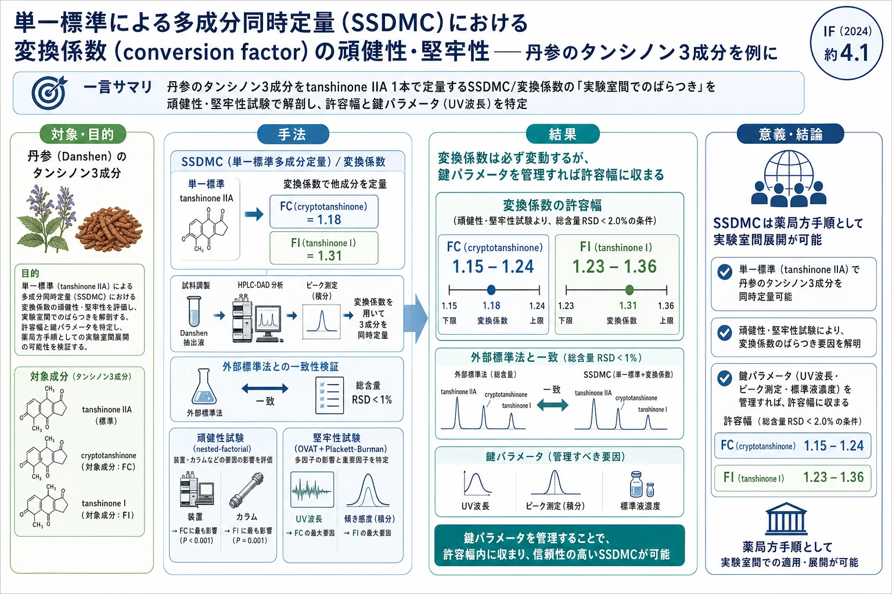
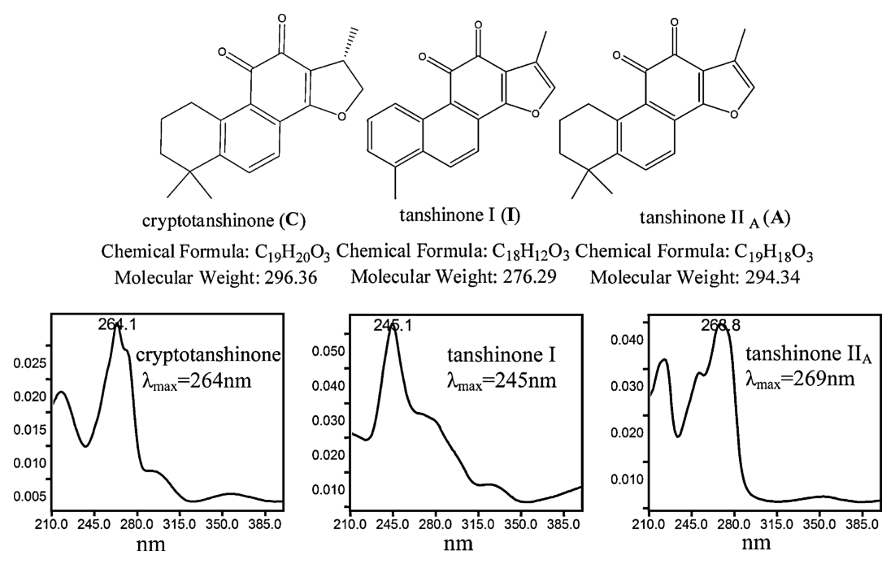
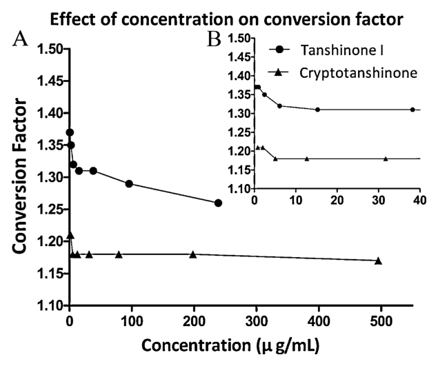
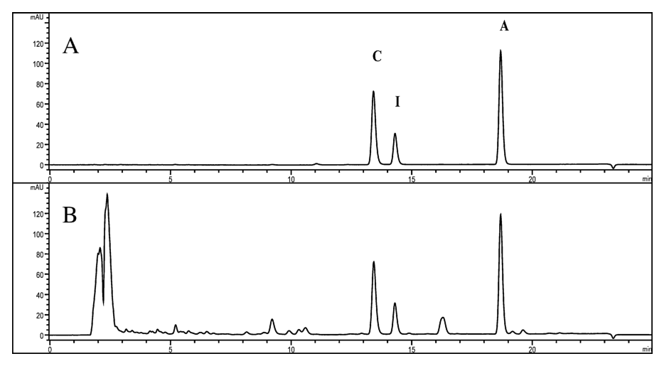
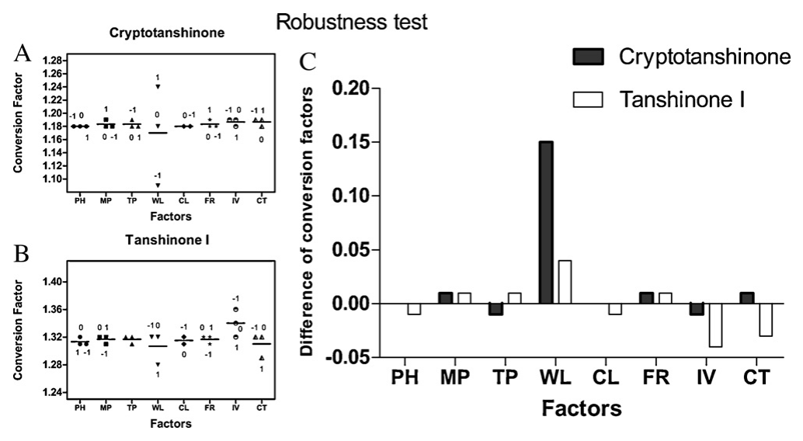
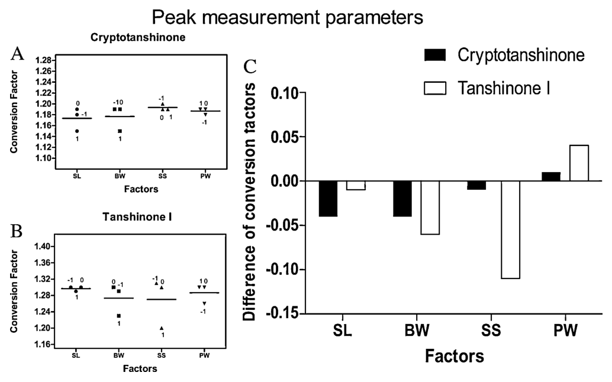
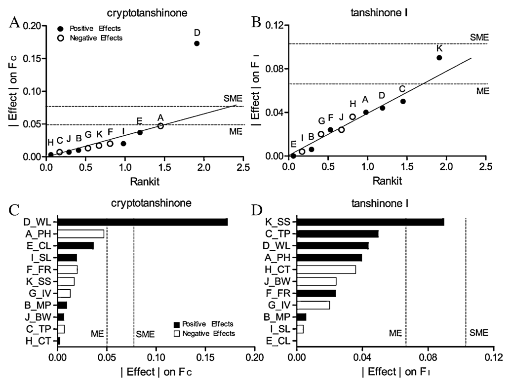

単一標準による多成分同時定量（SSDMC）における変換係数（conversion factor）の頑健性・堅牢性——丹参のタンシノン3成分を例に

<!-- 方針: ほぼ全訳＋必要に応じた補足。原文構成に沿って訳出。表・数値・数式を保持。本文の[N]は原文の番号引用に対応し末尾の参考文献にリンクする。図はPyMuPDFで原本から抽出。「> 補足:」は訳者注。 -->
書誌情報
- 原題: Ruggedness and robustness of conversion factors in method of simultaneous determination of multi-components with single reference standard
- 著者: Jin-Jun Hou, Wan-Ying Wu, Juan Da, Shuai Yao, Hua-Li Long, Zhou Yang, Lu-Ying Cai, Min Yang, Xuan Liu, Bao-Hong Jiang, De-An Guo（上海中薬現代化研究センター／中国科学院上海薬物研究所 ほか, 中国）
- 掲載: Journal of Chromatography A, 1218 (2011) 5618–5627. https://doi.org/10.1016/j.chroma.2011.06.058
- インパクトファクター: 約4.1（J. Chromatogr. A, JCR 2024 / Clarivate）
- 受理経過: 受領 2011-03-30 / 改訂 2011-06-13 / 採録 2011-06-14 / オンライン公開 2011-06-22
補足: SSDMC（single standard to determine multi-components）＝1本の標準品だけで複数成分を同時定量する手法。中国では一標準多成分定量、日本では QAMS（quantitative analysis of multi-components by single-marker）として広く知られる。変換係数（conversion factor） は、標準品と各被検成分の「単位質量濃度あたりの応答比」で、成分ごとの応答差を補正する係数。文献により 相対応答係数（RRF, relative response factor） とも呼ばれる。本論文はこの変換係数が実験室ごとにどれだけ揺れるか（頑健性・堅牢性）を初めて体系的に調べた研究。
要旨（Abstract）
単一標準による多成分同時定量（SSDMC）は、植物性製品や漢方（伝統中国医学, TCM）の品質管理にとって新規かつ合理的な手法である。しかし、異なる実験室で実施したときの変換係数（conversion factor）の変動が未知であることから、広い応用が制限されてきた。変換係数の変動を評価するため、丹参（Salvia miltiorrhiza）を例として選び、SSDMC法でタンシノン類3成分を定量した。次いで、変換係数の安定性に影響しうる3種類の要因——環境パラメータ変数・操作パラメータ変数・ピーク測定パラメータ変数——を包括的に調べるため、頑健性（ruggedness）試験と堅牢性（robustness）試験を採用した。頑健性試験には入れ子型要因計画（nested-factorial-design）を用いた。堅牢性試験には 一度に1変数（OVAT, one-variable-at-a-time）法 と Plackett–Burman（PB）計画 を併用した。結果は、変換係数の安定性が主にUV検出器の波長精度・ピーク測定パラメータ・標準溶液の濃度に関係することを示した。堅牢性試験から変換係数の許容範囲を得た。本研究の結果は、変換係数は必然的に変化するが、鍵となるパラメータを十分に管理すれば、その変動幅は許容可能であり、SSDMC法は異なる実験室で広く使用できることを示した。
1. 序論（Introduction）
漢方（TCM）は中国で数千年にわたり各種疾患の治療に広く用いられてきた。近年、米国でもハーブ製剤の健康増進効果への評価が高まっている[1]。複雑な植物性製品・漢方の品質を管理するため、多成分の定量は中国薬局方・米国薬局方の双方で鍵となる方法の一つと考えられている。中国薬局方2005年版（Ch.P. 2005）改訂時、中国薬局方委員会は、改訂される各条の分析法・試験項目が漢方の包括的品質管理の考えを体現し、単一マーカー成分ではなく多成分あるいは指紋を分析すべきと指示した[2]。
現在、ハーブ製品の多成分定量には主に2つの方法がある。第一の方法 は複数の標準品を用いて複数成分を分析するものである。例えばCh.P. 2010年版の各条では、3種の標準品（aconitine・hypaconitine・mesaconitine）を用いて烏頭（Aconitum carmichaelii Debx, 川烏）の3アルカロイドを定量し[3]、4種の標準品（polyphyllin I–IV）を用いて重楼（Paris polyphylla Smith var. yunnanensis）の4成分を定量している[4]。これに対し 第二の方法 は、単一の標準品だけで多成分の含量を同時に定量するもので、SSDMC（単一標準多成分定量）法と略される。第二の方法では、各成分の含量を直接、あるいは複数の変換係数で算出する。すべての標準品を大量に準備する困難さと費用のため、第一の方法の適用は限られ、特に5成分を超えると非常に困難となる。SSDMC法は最小限の標準品で低コストであり、10成分超の同時定量も可能にする。したがってSSDMC法の利用は理想的に探究されてきた。
SSDMC法の変換係数は、UV検出に基づき2つの型に分けられる。第一の型 は変換係数の値を1とみなすもので、全被検物のモル吸光係数と分子量が高い類似性をもつ場合にのみ使える。例えばUSP 33ではキャッツクロー（Cat's Claw）の品質がこの方法で管理され、isopteropodine を単一標準として他の5成分を直接定量する[5]。これは6成分が同一分子量の五環性インドールアルカロイドという同一骨格をもち、配置（configuration）だけが異なるためである。別の例では、ビルベリー抽出物中の15種のアントシアニンが、類似の発色団構造をもつため定量された[6]。しかしこの方法の利用は限られる。得られる結果は近似にすぎず、真値から乖離しうるためである。
第二の型 は全被検物の変換係数が互いに異なるもので、この乖離を避けられる。異なる発色団をもつ被検物のモル吸光係数（ε）は、同じ波長で一般に異なる（例：270 nmでの log(ε) は tanshinone IIA・cryptotanshinone・tanshinone I でそれぞれ4.47・4.39・4.30）。したがって、単一標準で定量するとき他成分の含量は補正すべきである。変換係数はこの含量補正に用いられ、一部の文献では 相対応答係数（RRF） とも呼ばれる。これは同一単位質量濃度における標準品と被検物の応答比と定義できる。例えばUSP 33では、Echinacea pallida の総フェノールが変換係数で定量され、クロロゲン酸を1本の標準品とし、他の3フェノール酸（caftaric acid・chicoric acid・echinacoside）をそれぞれ0.881・0.695・2.220で補正している[7]。Tuらは大黄根茎の7アントラキノンを変換係数で分析し、emodin を単一標準に選び、最大変換係数は aloe-emodin で値は 1:0.0759 であった[8]。この結果は変換係数による含量補正が絶対的に必要であることを明確に示す。
以上のとおり、多成分定量による植物性製品（生薬・漢方）の品質管理は既にコンセンサスに達している。変換係数付きSSDMCは、USP 33の生薬ダイエタリーサプリメント108各条のうち20（red clover・Echinacea angustifolia・St. John's Wort など）に適用され、欧州薬局方7.0（EP7.0）では232の生薬中6品目（Ginkgo乾燥エキス・Purple coneflower など）がこの方法で分析されている。一方、最新のCh.P. 2010年版（第I部）では、記載された593の中薬材のうち黄連（Coptides Rhizoma, Huanglian）のみがSSDMC法で管理されているが、変換係数は用いられていない。berberine hydrochloride を単一標準に選び、4アルカロイド（epiberberine・coptisine・palmatine・berberine）を変換係数による補正なしにそれぞれ定量している[9]。以上の事実は、変換係数付きSSDMC法がCh.P. 2010・EP7.0で広くは使われていないことを示す。最も重要な理由の一つは、異なる実験室での変換係数の潜在的変動が十分に考慮されてこなかったことである[8]。したがってSSDMC法は変換係数の頑健性・堅牢性によって大きく制約され、変換係数の変動に影響する要因はこれまで報告されておらず、体系的に調べる必要がある。
本研究では、変換係数の頑健性・堅牢性を調べるため、丹参（Salvia Miltiorrhizae Radix et Rhizoma, Danshen）を例に選んだ。我々の以前の丹参の指紋研究[10]から、丹参の親油性部分の品質は3主要成分——tanshinone I・cryptotanshinone・tanshinone IIA——の定量で管理できる。これら3成分の同時定量法は複数報告されている[11–13]が、SSDMC法を薬局方手順として3タンシノンを同時定量した報告はない。そこで、入手容易で原料中に豊富な tanshinone IIA を単一標準とし、ダイオードアレイ検出器付き高速液体クロマトグラフィー（HPLC-DAD）でSSDMC法（変換係数付き）の分析手順をまず検証した。次いで変換係数に影響しうる全要因を包括的に調べた。すなわち、(1) 環境パラメータ（異なる日・分析者・装置・カラム）に関係するか、その場合の理由は何か。(2) 操作パラメータ（移動相の酸濃度・移動相の成分比・UV検出器の波長・カラム長・注入量・カラム温度・標準品濃度）に関係するか。(3) ほとんど報告されないピーク測定パラメータ（スリット幅・バンド幅・積分パラメータ）に関係するか。(4) 変換係数の許容範囲はどれくらいか。(5) 最後に、変換係数の値と分析手順を、試験所認定を有する中国・上海市食品薬品検験所（SIFDC）で検証・確認した。これらの結果は、変換係数付きSSDMC法を薬局方手順として用いる確固たる基盤を提供した。
2. 実験（Experimental）
2.1 試薬・材料
tanshinone IIA（A）・cryptotanshinone（C）・tanshinone I（I）（図1）は中国薬品生物製品検定所（北京）から入手した。tanshinone I の純度はHPLCのピーク面積正規化法で97%、他2化合物は98%超であった。HPLC用アセトニトリルは Honeywell（米国NJ）、分析グレードのメタノールは国薬集団化学試薬（上海）、HPLC用リン酸は Tedia（米国）、高純度脱イオン水は Millipore Milli-Q 精製系から得た。丹参（Danshen）は中国山東省で採取し、著者の一人（De-An Guo博士）が同定した。証拠標本は中国科学院上海薬物研究所に保管した。
2.2 装置
分析は主に Agilent 1100 HPLCシステム（四元送液系・オンライン脱気装置・オートサンプラー・カラム温度制御器・ダイオードアレイ検出器DAD、解析ワークステーション Chemstation for LC 3D A10.02）で行った。加えて2台の異なるHPLCを用いた。1台は可変波長検出器（VWD）付きの Agilent 1100、もう1台は Waters 2996 HPLC（四元送液系・オンライン脱気・オートサンプラー・フォトダイオードアレイ検出器、Empower 2 ソフトウェア）である。試料調製には BRANSON B3500S-DTH 超音波浴（140 W, 42 kHz）を用いた。試料は主に Zorbax Extend-C18カラム（5 µm, 4.6 mm i.d. × 250 mm, Agilent）にガードカラム（5 µm, 4.6 mm i.d. × 10 mm）を付けて分離した。

2.3 クロマトグラフ条件
移動相はアセトニトリル（移動相A）と0.02%リン酸含有水（移動相B）の混合。溶出グラジエントは、初期組成が移動相A 61%、6分後から18分かけて直線グラジエントで移動相A 90%まで変化させ、続いて0.5分で61%に戻し4.5分保持した。流速1.0 mL/min。DAD検出器は270 nm・バンド幅4 nm・参照波長なしで動作。カラム温度20℃。
2.4 溶液の調製
標準溶液: tanshinone I ストック溶液は12.98 mgを25 mL褐色メスフラスコにクロロホルム5 mLで溶かし、メタノールで定容して調製。次に tanshinone IIA 13.40 mg・cryptotanshinone 11.36 mg を25 mL褐色メスフラスコに tanshinone I ストック溶液10.0 mLとともに溶かし、メタノールで定容して混合ストック溶液を調製。混合ストックを段階希釈（希釈倍率=10・12.5・16.67・25・50・250・500）して検量標準溶液とした。試料溶液: 丹参粉末300 mgを100 mL共栓三角フラスコに入れ、メタノール40 mLを加え30分超音波抽出、50 mL褐色メスフラスコに濾過し、残渣と濾紙を洗ったメタノール2 mLを合わせ、メタノールで定容した。
2.5 変換係数の算出
従来の外部標準法では、被検物に対応する全標準溶液をまず調製する。被検物濃度（Cx）は、試料溶液中の被検物応答（rx）と、単位濃度あたりの対応する標準溶液応答（rsx/Csx）の比で算出できる。
$$C_x = \dfrac{r_x}{r_{sx}/C_{sx}} \tag{1}$$
しかし単一標準で試料中の多成分を定量するとき、外部標準法とSSDMC法で得るCxはかなり異なりうる。被検物ごとにモル吸光係数（ε：所与波長・1 cmセルでの1 M溶液の吸光度）がしばしば異なるためである。例えば emodin と aloe-emodin の変換係数比は前述のとおり 1:0.0759 であり、aloe-emodin を補正なしに emodin で直接計算すると真値の7.59%にしかならない。したがって被検物濃度（Cx）は、試料溶液中の被検物応答（rx）と単位濃度あたりの標準溶液応答（rs/Cs）の比を求め、変換係数（Fx）で補正すべきである。
$$C_x = \dfrac{r_x}{r_s/C_s} \times F_x \tag{2}$$
変換係数を得るには、内部標準法と同様、変換係数（Fx）を標準物質（rs/Cs）と被検物（rsx/Csx）の単位濃度あたり応答比とする。
$$F_x = \dfrac{r_s/C_s}{r_{sx}/C_{sx}} \tag{3}$$
変換係数の算出手順：(1) 2.4.1項のとおり独立した検量標準溶液を3組調製、(2) 各濃度水準で式(3)の比を算出、(3) 各被検物の変換係数を7段階濃度×3反復の平均値として得る。加えて、標準溶液の濃度が変換係数に及ぼす影響を調べた。最大600倍の濃度差にわたる一連の標準溶液（希釈倍率=1・2.5・6.25・15.62・39.06・97.66・244.14・610.35 の8段階）を混合ストックの段階希釈で作り、安定性を観察した。
2.6 分析法バリデーション
丹参のC・I・Aを定量するSSDMC法を、USPに従い、選択性・精確度・直線性・精度（日内/日間、分析者間、装置間、カラム間）・安定性でバリデートした。SSDMC法の結果は従来の外部標準法（3標準品使用）の結果と比較した。
2.7 変換係数の頑健性・堅牢性
頑健性・堅牢性試験は、分析手順を異なる実験室で行うときに変わりうる全潜在要因を調べ、結果に最も顕著な影響を与える要因を特定するために設計した[14]。頑健性試験 では主に環境要因を調べる。環境要因には既知・未知の多くのパラメータが含まれ、操作パラメータとピーク測定パラメータはその主要な既知パラメータにすぎない。堅牢性試験 では主に操作パラメータを調べる。
2.7.1 頑健性試験（中間精度）: 環境要因（異なる日・分析者・装置・カラム源など、分析手順に通常記載されない要因）の影響を調べた。要因間相互作用を考慮するため入れ子型要因計画を採用[15,16]。3分析者が参加し、各分析者が混合標準溶液（希釈倍率=25）を2重で調製、他と異なる2本ずつのカラムを用い、各カラムを3台のHPLCすべてで使用した（表1）。Minitab V16 で釣り合い型ANOVA・制限付きモデルを用いて解析した[15]。
2.7.2 堅牢性試験: 操作要因（移動相pH・成分比・時間プログラム・UV波長・流速・注入量・カラム温度）の影響を調べた。これらは異なる実験室でシステム適合性を満たすため微調整されうる。外部標準法では狭い範囲の調整で結果は概ね影響を受けないが、単一標準のみを使うSSDMC法での影響は未知であった。USPに基づき狭い範囲でパラメータを変え（表2）、一度に1変数（OVAT）法で変換係数の変動を調べた。
2.7.3 ピーク測定パラメータ試験: 堅牢性試験の一部として、検出器のスリット・波長幅（バンド幅）・積分法を調べた（表3）。Agilent HPLC-DADを例に、(1) スリットは既定4 nm、2 nmと8 nmを比較、(2) バンド幅（DAD/PDAで、ある波長長の平均応答として記録。その中心が「UV検出器波長」）は既定4 nm、2 nmと16 nmを比較、(3) 積分法（Agilentでは傾き感度 slope sensitivity とピーク幅 peak width がピーク面積に最も影響）を比較した。OVAT法を主に用いた。
2.7.4 堅牢性・ピーク測定試験の再検証: OVATは各要因の効果を明快に示せるが、統計的解釈や実験領域全体の評価はできない。そこで Plackett–Burman（PB）計画で結果を再検証した。堅牢性試験8因子＋ピーク測定3因子（ピーク幅を除く）の計11因子を同時再試験。11因子（N=12）のPB試験を文献[17]に従い設計し、12実験の変換係数を算出、half-normalプロットとParetoチャートをExcelで描き、Dongの基準を算出した[17]。注入量の水準(+1)は15 µL、(−1)は5 µLに変更した。
2.8 認定試験所による検証: タンシノン類の分析手順を、試験所認定を有する中国・上海市食品薬品検験所（SIFDC）で検証。変換係数を再計算し、精確度を再試験。当所提供の3バッチ試料をSIFDCが定量し、当所結果と比較した。
3. 結果と考察（Results and discussion）
3.1 変換係数の算出
本研究では cryptotanshinone と tanshinone I の変換係数を求めた。3タンシノンは同一波長で同一濃度でも応答が異なるためである。tanshinone IIA を単一標準に選んだ。3成分はいずれも類似構造のジテルペンキノンだが極大吸収波長が異なる（図1）。定量波長は270 nmを選んだ。cryptotanshinone と tanshinone IIA の極大吸収波長がほぼ270 nmで、tanshinone I の肩ピークも270 nmで得られるためである。7段階濃度×3反復の結果、tanshinone I の変換係数（FI）は1.31 ± 0.02、cryptotanshinone（FC）は1.18 ± 0.01であった（補足表S1-1〜S1-4）。tanshinone I の濃度は純度97%で補正、他2成分は補正なし。
加えて、他2つの算出法も検討した。第一は直線回帰式の傾き比（tanshinone IIA と tanshinone I または cryptotanshinone）、結果はFI=1.30、FC=1.18と類似したが、回帰式には無視できない切片がしばしばある（例：aloe-emodin の式 y=2.03x−3.01 は切片が傾きより大きい[8]）。したがって切片が無視できないときは回帰式で変換係数を算出すべきでない。第二は単一濃度による算出だが、理由は同じで、変換係数の算出に用いる濃度範囲は少なくとも直線性範囲と一致すべきである。

FIとFCを図3に散布した。図3Aは濃度上昇とともに値が低下し、FIの変化がより顕著であることを明示。FCは10 µg/mL超で安定。両者とも10 µg/mL未満では著しく上昇した（図3B）。したがってFI・FCは10 µg/mL超で算出すべきである。tanshinone I は高濃度側も制限すべきで、本研究では最高20 µg/mL、最低0.40 µg/mL（試料中含量が非常に低く、大きめの変動は許容）とした。10 µg/mL未満では結果のRSDが増大する。標準溶液濃度は変換係数に影響し、その影響は成分ごとに異なる。理由は、(1) 濃度が低すぎると直線性が成立しない、(2) 回帰式の切片が大きく異なる（UVスペクトルに関係。tanshinone I は tanshinone IIA と大きく異なるが、cryptotanshinone は tanshinone IIA と非常に類似）。したがって高濃度で変換係数を算出するときは回帰式の切片を無視してはならない。以上から、(1) 変換係数は直線性範囲だけでなく相対的に安定な範囲でも算出すべき、(2) 試料中の被検物濃度が低すぎ・高すぎるときは試料量を調整すべき、という2つの示唆が得られた。

3.2 バリデーション
USP32〈1225 薬局方手順のバリデーション〉に基づき、得た変換係数を用いて検証した。選択性は良好で高い理論段数により未知物質から容易に分離できた（図2）。精確度は添加80%・100%・120%で98.0–103.0%（RSD 1.5–3.0%、補足表S3）。再現性のRSDは試料濃度50%・100%・150%で0.14–1.30%（表S4）。直線性は tanshinone IIA 1.07–53.60 µg/mL・cryptotanshinone 0.91–45.44 µg/mL・tanshinone I 0.40–20.14 µg/mL で要件を満たした（表S5）。日間変動RSDは1.3–1.7%、分析者間RSDは0.7–1.1%でいずれも結果に影響なし（表S6・S7）。5本の異なるカラムを2台のHPLC（Agilent 1100-DAD・Waters 2695-PDA）で用い、SSDMC法による総含量のカラム・装置間RSDは1.0%未満（表S8）。試料溶液は調製後24時間安定でピーク面積RSDは0.9%未満（表S9）。
バリデーション後、10バッチを2法で分析：Method I は3標準品（tanshinone I・cryptotanshinone・tanshinone IIA）、Method II は単一標準＋2変換係数。各試料の3成分合計含量のRSDは両法で0.7%未満、tanshinone I 単独でも3.2%未満（表S10）。tanshinone I の試料中濃度が低いためだが、合計含量のRSDが要件を満たすため品質管理上は無視できる。SSDMC法（変換係数付き）は外部標準法と一致した結果を保証できることが示され、単一実験室で得た全結果は許容範囲で、Tuらの研究[8]と整合した。
3.3 頑健性・堅牢性
SSDMC法は単一実験室では十分良好だが、異なる実験室ではしばしば当惑させられる。そこで頑健性・堅牢性試験で変換係数の安定性を調べた。
3.3.1 頑健性試験: 環境パラメータ（異なる分析者・装置・カラム）を調べ、これらは相互作用しうる。OVATは要因間相互作用を考慮できないため推奨されず、入れ子型要因計画で3主要因とその相互作用を評価した。3装置（Agilentの VWD・DAD 各1、Waters の PDA 1）と6カラム（すべてODS化学結合多孔質シリカ、内径4.6 mm・長さ250 mm・粒径5 µm）を、3メーカー（Agilent の Extend-C18・Eclipse-XDB C18、資生堂の Capcell PAK C18、Elite の Kromasil C18）から用いた。全カラムはシステム適合性（tanshinone I と cryptotanshinone の分離度>1.5、tanshinone IIA の理論段数>60,000）を満たした。
全カラム・装置でのFC・FIの平均は1.20・1.31、RSDは1.67%・2.29%であった。平常時は許容範囲に見えるが、別実験室で行うと増幅されうる。入れ子型要因計画の統計結果を表4に示す。「column(analyst)」はカラム要因が分析者要因に入れ子であるための各分析者内カラム効果、「Analyst\Instrument」は分析者と装置の相互作用、「Instrument\Column(Analyst)」は各分析者内の装置とカラムの相互作用を意味する。結果は、装置要因がFCに最も重要（P<0.001）、各分析者内カラム要因がFIに最も重要（P=0.001）であることを明示した。分析者要因はFCのみに影響（P=0.03）、装置要因はFIにも影響（P=0.04）し各分析者内カラムと相互作用（P=0.01）した。
入れ子型要因計画から、異なる装置とカラムが変換係数への最重要因子で、被検物ごとに異なることが示された。SSDMCを異なる実験室で使うと装置・カラムは必然的に変わるため、潜在機序を明らかにして関連パラメータを管理すべきである。推定機序は、装置要因は主に検出器、カラム要因は主にピーク形状に関係する、というものである。(1) 装置ごとに検出器系がわずかに異なりうる。cryptotanshinone は270 nm付近で非常に鋭いピーク、tanshinone I は同波長で比較的緩やかな肩ピークをもつUVスペクトルであるため、FCは検出器変動により敏感で、異なる装置により敏感になる。(2) カラムごとにピーク形状（分離度・テーリング）がわずかに異なり、小さいピーク面積の変換係数ほど影響されやすい。tanshinone I は混合標準中で最低含量、cryptotanshinone は tanshinone IIA と同程度含量。装置のボイド容積差がカラムに異なる影響を与えることも各分析者内の装置×カラム相互作用を説明する。したがってFIは異なるカラムにより敏感である。両仮定は続く堅牢性・ピーク測定試験で検証される。
3.3.2 堅牢性試験: 頑健性試験の要因が実験室間で必然的に変わるのに対し、堅牢性試験の要因は主観的に調整される。これらは主に検出器・カラム・移動相（環境要因の鍵パラメータ）に関係するため、上記仮説を検証できる。操作パラメータ8因子を各3水準（変動幅はUSP 33準拠）で調べた（図4A・B）。図4Aは、波長を除く全因子がFCにほとんど影響しないことを明示。図4Bは、波長・注入量・カラム温度がFIに幾らか影響することを示す。各因子の変換係数の最大差（+1水準から−1水準を引く）を図4Cに示す。図4Cは、波長の変動がFIよりFCに顕著であることを明示し、頑健性試験での仮定を検証した。波長は8因子中で最も顕著な因子であった。

cryptotanshinone では波長以外の全差が0.01未満、tanshinone I では上記3因子以外の全差が±0.01の範囲。これら変動でFC・FIのRSDは2.0%未満と算出できる。注入量とカラム温度はFIに幾らか影響し、注入量を10 µLから1 µLに減らすとFIは1.32から1.36へ増加（比例的変化。ピーク面積が減りすぎ、低被検物量で変換係数が影響される）。カラム温度を20℃から30℃に上げるとFIは1.32から1.29へ低下したが、20℃から15℃では安定。高温で分離度が顕著に低下するためで、tanshinone I と cryptotanshinone の分離度は15℃・20℃の3.77・3.02から30℃で1.76に低下した。分離度低下で同一積分パラメータでもピーク面積が変化し、小面積の変換係数ほど影響される。
3.3.3 ピーク測定パラメータ試験: これらは文献でほとんど報告されず外部標準法で無視されがちだが[14]、SSDMC法では無視すべきでない。4主要因子を調べた（図5A・B）。図5Cから、FCは他2積分パラメータよりスリット・バンド幅に敏感（UVスペクトルに関係）、逆にFIは積分パラメータ、特に傾き感度に敏感であることが分かった。これがFIがカラム・カラム温度に影響されやすい理由の一つである。本研究では効果傾向観察のため積分パラメータ範囲を十分広くとったが、実際にはそれほど影響されない。ただし異なるHPLCでは他の多くの積分法が選べるため、積分ルールを詳細に規定すべきである。

3.3.4 堅牢性・ピーク測定試験の再検証（PB計画）: PB計画の結果を図6に示す。half-normal確率プロットでPB計画を解釈し、Paretoチャートがより直観的である。両図はFCで波長、FIで傾き感度が最重要であることを明示し、OVATの結果と一致した。PB計画にはダミー効果がなく効果の標準誤差を推定できないため、Dongのアルゴリズムで有意効果を同定した。誤差幅（ME＝臨界効果）と同時誤差幅（SME）を文献[17]に従い算出。MEを超えSME未満の効果は「有意の可能性あり」、SMEを超える効果は「有意」とされる[17]。この規則で、波長の効果は有意、傾き感度の効果は有意の可能性ありであった。非有意因子の重要度順位はOVATと異なった（例：移動相pHはFCでPB計画では2番目に重要だが堅牢性試験では影響なし）。PB計画は要因間相互作用が無視できるという仮定に基づくが、非有意因子では実際そうでない場合があり、各因子効果の解釈は難しく、この目的にはOVATがより適する。

3.4 変換係数の許容範囲
変換係数は必然的に変化する。ではその許容範囲は何か。異なる装置・カラム試験では、FCの範囲は1.18〜1.24で、最小・最大で理論上 cryptotanshinone 含量のRSDは3.5%未満と算出。実際の結果も各被検物のSSDMC法によるRSDは異なる装置・カラムで2.0%未満（表S8）。異なる試料では、タンシノン総含量のSSDMC法と外部標準法のRSDは1.0%未満（表S10）。植物性製品では総含量で品質を評価することが多く、SSDMC総含量のRSDは外部標準法と比べ2.0%未満で、変換係数の変動は許容できる。頑健性・堅牢性試験の結果から、総含量RSDが2.0%未満のとき、FCの範囲は（1.15–1.24）、FIの範囲は（1.23–1.36）であった。
3.5 再現性
開発した分析法は認定試験所（SIFDC）で検証された（表5）。2試験所間の偏差は6.0%未満で中国薬局方の要件を満たした。cryptotanshinone・tanshinone I の変換係数は1.15・1.23で、いずれも上記許容範囲に入った。
3.6 提言
変換係数はUV検出器に最も敏感で、UV波長精度が最も顕著な因子であった。ピーク測定パラメータも重要な役割を果たす。加えて、変換係数算出に用いる標準溶液濃度は適切な範囲であるべき。SSDMC法に有用な4提言：(1) 定量波長の堅牢性を慎重に選ぶ——UVスペクトルの吸収ピークの緩やかな範囲を基準に共通波長を最適定量波長とする。(2) 第二の標準品を導入しうる——新たなシステム適合性パラメータ（2標準品で算出した変換係数の範囲）に基づき分析系を調整する。第二標準は被検物の一つでも試料に含まれない化合物でもよい。(3) 検出器・ピーク測定ルールの詳細パラメータを分析手順に明記すべき。(4) 変換係数算出に用いる標準濃度は適切な範囲にすべき。
4. 結論（Conclusion）
本研究の新知見は、変換係数が異なる実験室でより影響されやすいことである。主要かつ重要な因子は検出器とそのピーク測定パラメータであった。しかし検出器パラメータを慎重に管理すれば、SSDMC法は植物性製品（生薬・漢方）の品質管理に適用できる。SSDMC法の適用改善に4提言をまとめた。植物性製品のSSDMC手順を開発するには、植物性製品の複雑さゆえに、異なる装置・異なるピーク測定パラメータ・異なるカラムについて頑健性・堅牢性試験を行うべきである。
補足（実務的示唆）: 本サイト収録のQAMS/一標準多成分定量の各論文（黄連の qams、fcg・cqcqd・mlstp の Q-marker、ssyx の線形置換法など）が「変換係数（RRF）をどう決めるか」を扱うのに対し、本論文は 「決めた変換係数が実験室を移ると、どこまで揺れるか」 を初めて統計計画（頑健性=入れ子型要因計画、堅牢性=OVAT＋Plackett-Burman）で分解した点が要。要点は3つ——①UV波長の精度が最大の揺れ要因（緩やかな吸収域を定量波長に選べば揺れが小さい）、②ピーク測定パラメータ（スリット/バンド幅/傾き感度）も無視できない（外部標準法では見過ごされがちだが単一標準では効く）、③標準液濃度は「直線性かつ安定」な範囲で（低濃度・切片の大きい成分で変換係数が動く）。管理すれば許容幅（FC 1.15-1.24／FI 1.23-1.36、総含量RSD<2%）に収まる、という「変換係数を薬局方手順にするための頑健性の担保」を示した基礎研究。ssyx の線形置換法(LSM)や qams-single-marker-review と併読すると、RRFの決め方→揺れの管理という流れで理解できる。
参考文献（References）
- United States Pharmacopeia Dietary Supplements Compendium, 2009, p. 1522.
- National Commission of Chinese Pharmacopoeia, Technological Requirements of Research and Drafting Monograph of Traditional Chinese Medicine in Ch.P. 2010, 2008.
- National Commission of Chinese Pharmacopoeia, Pharmacopoeia of People's Republic of China, vol. I, China Medical Science Press, Beijing, 2010, p. 36.
- National Commission of Chinese Pharmacopoeia, Pharmacopoeia of People's Republic of China, vol. I, China Medical Science Press, Beijing, 2010, p. 243.
- United States Pharmacopeia 33-NF 28, vol. I, US Pharmacopoeial Convention, Rockville, MD, 2010, p. 1046.
- United States Pharmacopeia 33-NF 28, vol. I, US Pharmacopoeial Convention, Rockville, MD, 2010, p. 1037.
- United States Pharmacopeia 33-NF 28, vol. I, US Pharmacopoeial Convention, Rockville, MD, 2010, p. 1093.
- X.Y. Gao, Y. Jiang, J.Q. Lu, P.F. Tu, J. Chromatogr. A 1216 (2009) 2118.
- National Commission of Chinese Pharmacopoeia, Pharmacopoeia of People's Republic of China, vol. I, China Medical Science Press, Beijing, 2010, p. 285.
- A.H. Liu, Y.H. Lin, M. Yang, H. Guo, S.H. Guan, J.H. Sun, D.A. Guo, J. Chromatogr. B 846 (2007) 32.
- Z.H. Shi, J.T. He, T.T. Yao, W.B. Chang, M.P. Zhao, J. Pharm. Biomed. Anal. 37 (2005) 481.
- L.M. Zhou, M. Chow, Z. Zuo, J. Pharm. Biomed. Anal. 41 (2006) 744.
- Y. Liu, X.R. Li, Y.H. Li, L.J. Wang, M. Xue, J. Pharm. Biomed. Anal. 53 (2010) 698.
- B. Dejaegher, Y. Vander Heyden, J. Chromatogr. A 1158 (2007) 138.
- D.C. Montgomery, Design and Analysis of Experiments, 6th ed., Posts & Telecom Press, Beijing, 2009, p. 459.
- C.A. Beasley, J. Shaw, Z. Zhao, R.A. Reed, J. Pharm. Biomed. Anal. 37 (2005) 559.
- Y. Vander Heyden, A. Nijhuis, J. Smeyers-Verbeke, B.G.M. Vandeginste, D.L. Massart, J. Pharm. Biomed. Anal. 24 (2001) 723.